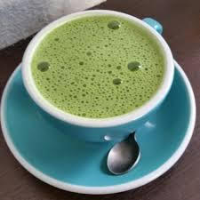
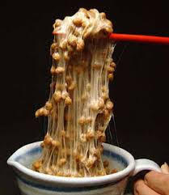
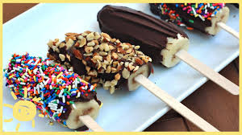
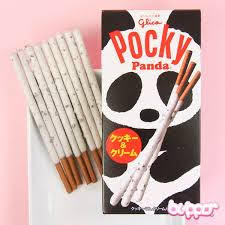
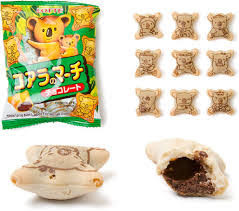

Brief introduction about the website:
This website is about Foods Souvenir that you can buy when Travling to Japan!
Food souvenir that you can buy when traveling to Japan:





NOTE: Please press "Learn more" to see more Awesome Websites!!!~